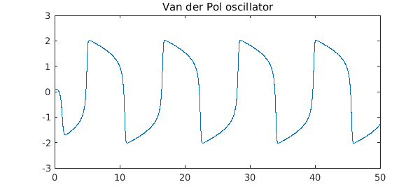
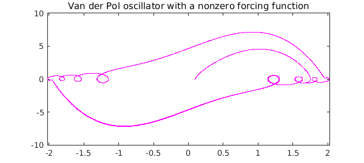
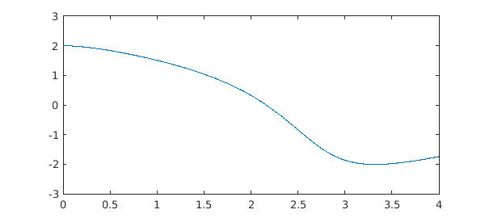

With the release of Chebfun v5.1 in December 2014, the IVP capabilities of Chebfun greatly improved. Here, we explore some of the new functionality.
Chebfun's new IVP solver
Previously, Chebfun solved both initial value problems (IVPs) and boundary value problems (BVPs) globally with spectral methods. While spectral methods are often very effective for for BVPs, and also for linear IVPs, they are usually not very good for nonlinear IVPs, and indeed the Newton iteration often does not converge. The trouble is that global methods do not make use of the special structure of IVPs, which is that all information passes in one direction over the time interval, from the initial time $t=0$ to the final time $t=T$.
The standard way to take advantage of this local structure of IVPs is to use time-stepping methods such as Runge-Kutta and Adams-Bashforth formulas. The MATLAB codes ode45 and ode113 are based on such formulas. Unfortunately, these codes require the user to rewrite a second- or higher-order ODE in first-order form. This can be a time-consuming and error-prone task, and moreover, it is inconsistent with Chebfun's more convenient syntax for BVPs.
Thanks to the recent Chebfun developments, discussed in [1], the chebop class is now capable of solving IVPs using time-stepping methods, while retaining the attractive chebop syntax and still returning the solutions as chebfuns. The solutions are now, by default, computed by ode113 and then converted to chebfuns.
Van der Pol oscillator
A widely studied nonlinear IVP is the van der Pol oscillator, an oscillator with nonlinear damping [2]. Solutions evolves in time according to the ODE
$$ u'' - \mu(1-u^2)u' + u = 0, $$
where $\mu$ is a scalar parameter that governs the nonlinearity and strength of the damping.
To solve this ODE with $\mu = 5$ for $t \in [0,50]$ with initial conditions $u(0) = 0.1, \, u'(0) = 0$, we proceed as follows.
mu = 5; N = chebop(@(t, u) diff(u, 2) - mu*(1-u.^2).*diff(u) + u, [0 50]); N.lbc = [0.1; 0]; tic, u = N\0; toc
Elapsed time is 2.026730 seconds.
The output from an IVP solution is, of course, a chebfun:
breaks = u.domain(2:end-1);
LW = 'linewidth';
plot(u,LW,1.2), hold on
plot(breaks, u(breaks), 'k.', 'markersize', 14), hold off
title('Van der Pol oscillator')

Unless the solution is rather complicated, this solution to an IVP will usually be a chebfun consisting of a single piece, i.e., one fun. In a problem like this one the polynomial degree is rather high:
u
u =
chebfun column (1 smooth piece)
interval length endpoint values
[ 0, 50] 3765 0.1 -1.3
vertical scale = 2
For a phase portrait, we plot $u'$ against $u$, revealing the limit cycle of the oscillator. We also superimpose a chebop "quiver" vector field on the plot:
plot(u, diff(u), 'm', LW, 1.2), hold on
quiver(N,[-2 2 -10 10]), hold off
title('Phase plane and limit cycle')
If we solve the ODE again but now with a nonzero forcing function on the right, we see a solution lying near the limit cycle but not on it. (The "quiver" plot is no longer relevant now that there is a forcing function.)
t = chebfun(@(t) t, [0 50]);
f = 5*sin(5*t);
uForced = N\f;
plot(uForced, diff(uForced), 'm', LW, 1.2)
title('Van der Pol oscillator with a nonzero forcing function')

Solving IVPs globally
It is still possible to solve IVPs via global methods rather than time-stepping in Chebfun, if one wishes to do so, and for linear problems, this may often be advantageous. For the nonlinear Van der Pol problem above, the Newton iteration will not converge, but it converges if we decrease $\mu$ and $T$:
mu = 1; N = chebop(@(t, u) diff(u, 2) - mu*(1-u.^2).*diff(u) + u, [0 4]); N.lbc = [2; 0];
Now, before solving, we set the preference for the IVP solver to be collocation rather than ode113 (see help cheboppref for details):
cheboppref.setDefaults('ivpSolver', @chebcolloc2)
tic, u = N\0; toc
plot(u, LW, 1.2)
cheboppref.setDefaults('factory');
Elapsed time is 4.096036 seconds.

This solution took as long as the previous one despite being a much simpler problem (it requires 8 Newton steps). It really can be beneficial to make use of the special structure of IVPs!
References
-
A. Birkisson, Automatic reformulation of higher order ODEs to first order form, in preparation.